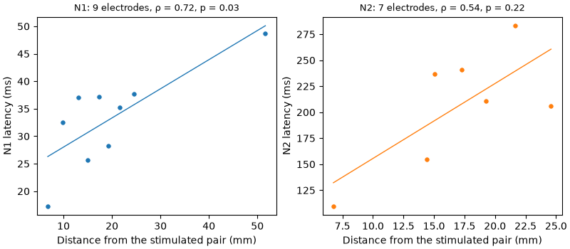

Note
Go to the end to download the full example code.
11: Further analysis¶
Use the results: pick one bump across electrodes, check its range, and relate it to where the electrodes are.
Introduction¶
A fit gives numbers; a study asks a question with them. Here we take the real recording of tutorial 08 and ask a classic CCEP question: does the response come later on electrodes that are farther from the stimulated pair? If the signal travels along the brain’s connections, it needs more time to go farther. The dataset we use was published to measure this transmission speed across ages (van Blooijs et al., 2023).
The steps:
fit all the electrodes, and put the results in a table;
keep one bump (the N1, then the N2) on the electrodes that really respond;
check that the latencies are spread inside their window, not piled at its edges;
add the position of each electrode, and relate latency to distance.
# Import what we need
import matplotlib.pyplot as plt
import numpy as np
import pandas as pd
from scipy.stats import spearmanr
from evoparam import reports
from evoparam.io import openneuro_url, read_bids
1. Fit all the electrodes¶
As in tutorial 08: the 10 pulses on the pair PT13-PT14 of patient UMCU01, the 46 other
electrodes of the grid, and the chain of the "ccep" preset.
site = "PT13-PT14"
picks = [f"PT{number:02d}" for number in range(1, 49) if f"PT{number:02d}" not in site]
trials = read_bids(
"ds004080",
"ccepAgeUMCU01",
session="1",
task="SPESclin",
run="021448",
remote=True,
select={"stim_site": site},
picks=picks,
epoch=(-1.0, 1.0),
)
result = reports.run_pipeline(trials, "ccep", random_state=0, trial_fits=False)
# One row per bump and per electrode, with the test of tutorial 08
table = result.group.to_dataframe()
columns = ["channel", "label", "latency", "amplitude", "existence_significant"]
print(table[table["label"].isin(["N1", "N2"])][columns].head())
channel label latency amplitude existence_significant
3 PT03 N2 0.063838 -189.121469 False
6 PT04 N2 0.154738 -436.823246 True
8 PT05 N1 0.032477 -145.720014 True
11 PT06 N1 0.017296 -128.931295 True
13 PT06 N2 0.109734 -179.123171 True
2. Keep one bump on the electrodes that respond¶
label names the bumps, and existence_significant says whether the electrode
passed the test of a real response (tutorial 08). An electrode with no N1 simply has no
N1 row: it is left out, not counted as zero.
responds = table["existence_significant"]
n1 = table[(table["label"] == "N1") & responds].copy()
n2 = table[(table["label"] == "N2") & responds].copy()
print(f"{len(n1)} electrodes with an N1, {len(n2)} with an N2")
9 electrodes with an N1, 7 with an N2
3. Check the range¶
The "ccep" preset names a bump N1 when it peaks between 9 and 50 ms, N2 between 50
and 300 ms. If many latencies were piled at an edge of these windows, the windows would
be cutting the real responses, and should be checked. A simple look at the values is
enough.
print("N1 latencies (ms):", np.sort(np.round(1000 * n1["latency"].to_numpy())))
print("N2 latencies (ms):", np.sort(np.round(1000 * n2["latency"].to_numpy())))
N1 latencies (ms): [17. 26. 28. 32. 35. 37. 37. 38. 49.]
N2 latencies (ms): [110. 155. 206. 211. 237. 241. 283.]
The N1 latencies spread from 17 to 49 ms, the N2 latencies from 110 to 283 ms: no pile at an edge. One N1, at 49 ms, is close to the upper edge (50 ms): worth a look at its figure before using it.
4. Relate latency to distance¶
The positions of the electrodes come with the dataset (electrodes.tsv, in mm), and
read_bids puts them in trials.ch_info. The distance of an electrode is measured
in a straight line from the middle of the stimulated pair.
positions = trials.ch_info.set_index("name")[["x", "y", "z"]]
print(positions.head(3))
x y z
name
PT01 -44.209587 -84.807152 -3.671803
PT02 -45.489326 -81.142433 -0.828054
PT03 -58.927807 -56.633564 -12.380226
The two stimulated electrodes were left out of picks, so their positions are not in
trials.ch_info. We read them from the dataset’s table of electrodes.
electrodes = pd.read_csv(
openneuro_url(
"ds004080", "sub-ccepAgeUMCU01/ses-1/ieeg/sub-ccepAgeUMCU01_ses-1_electrodes.tsv"
),
sep="\t",
).set_index("name")
middle = electrodes.loc[site.split("-"), ["x", "y", "z"]].mean()
for bumps in (n1, n2):
xyz = positions.loc[bumps["channel"]].to_numpy()
bumps["distance"] = np.linalg.norm(xyz - middle.to_numpy(), axis=1)
Now the figure: the latency of each electrode against its distance, for the N1 (left) and the N2 (right), with a straight line through the points.
fig, axes = plt.subplots(1, 2, figsize=(8, 3.5), layout="constrained")
for ax, bumps, name, color in zip(axes, (n1, n2), ("N1", "N2"), ("C0", "C1"), strict=True):
distance = bumps["distance"].to_numpy()
latency = 1000 * bumps["latency"].to_numpy()
slope, intercept = np.polyfit(distance, latency, 1)
line = np.array([distance.min(), distance.max()])
ax.plot(line, intercept + slope * line, color="white", linewidth=2.2)
ax.plot(line, intercept + slope * line, color=color, linewidth=1.0)
ax.scatter(distance, latency, s=30, color=color, edgecolor="white", linewidth=0.8, zorder=3)
ax.set_xlabel("Distance from the stimulated pair (mm)")
ax.set_ylabel(f"{name} latency (ms)")
rho, p_value = spearmanr(distance, latency)
ax.set_title(f"{name}: {len(bumps)} electrodes, ρ = {rho:.2f}, p = {p_value:.2f}", fontsize=9)

ρ (Spearman’s rank correlation) goes from −1 to 1: 1 means “farther is always later”, 0 means no relation. The p-value is the chance of a ρ this large if distance and latency were unrelated.
For the N1, farther electrodes respond later (ρ = 0.72, p = 0.03). For the N2 the trend goes the same way but is weaker, and could be chance (ρ = 0.54, p = 0.22): the N2 is broad, its latency less precise (tutorials 06 and 09), and it travels through more relays.
Read it with care: this is one patient, one stimulated pair and 7 to 9 electrodes; and a straight line on the brain’s surface is not the path the signal takes. A real study pools many pairs and patients, which is what the dataset was made for.
Note
Try it yourself: put amplitude instead of latency on the y-axis. Is the
response smaller far from the stimulated pair?
Other analyses¶
The same table supports many other questions. A few that evoparam helps with:
compare two conditions (for example two stimulation currents) with
evoparam.stats.compare_conditions;relate the amplitude to the current, trial by trial, with
evoparam.trials.dose_response;build a map of which sites connect to which electrodes with
evoparam.spatial.connectivity_matrix.
Conclusion¶
The table of a group fit is where an analysis starts: keep the bump you study, only on the electrodes that respond; check that its values are not piled at the edges of its window; then relate it to what you know about each electrode, here its position.
Total running time of the script: (0 minutes 11.023 seconds)